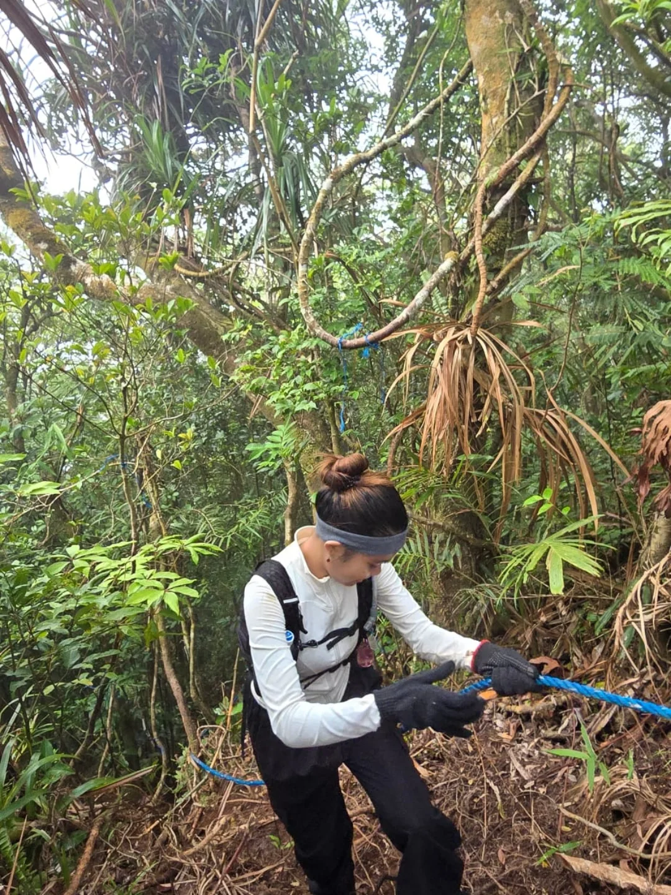
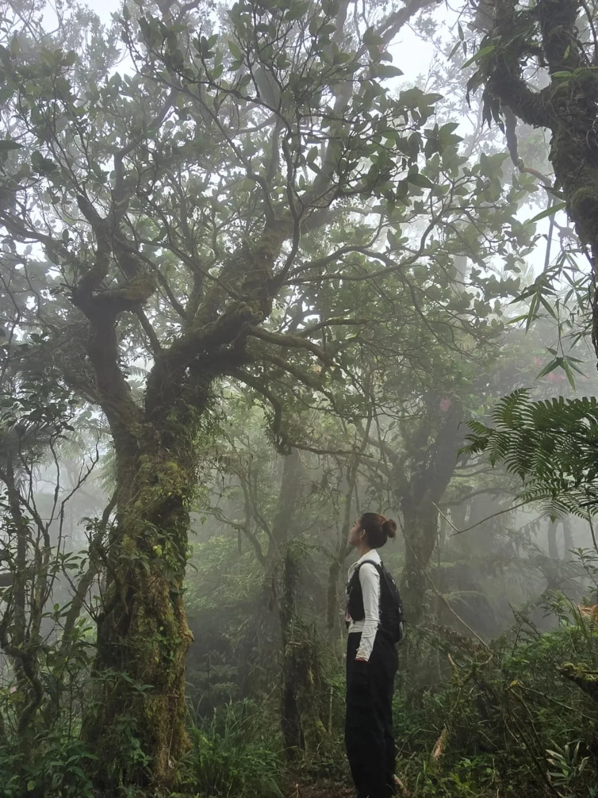
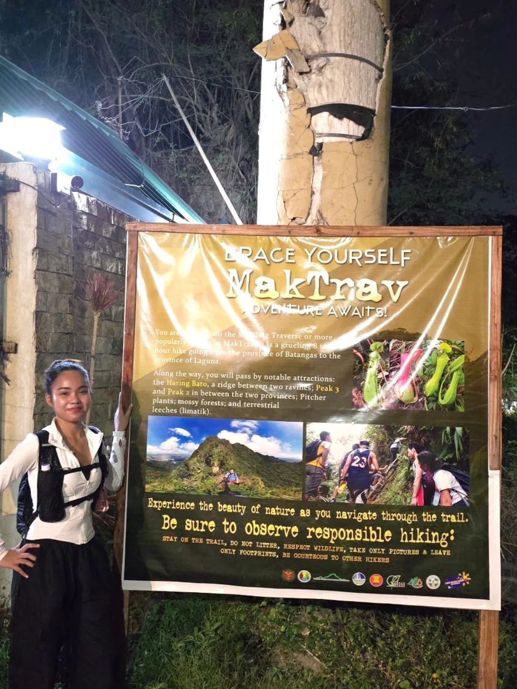
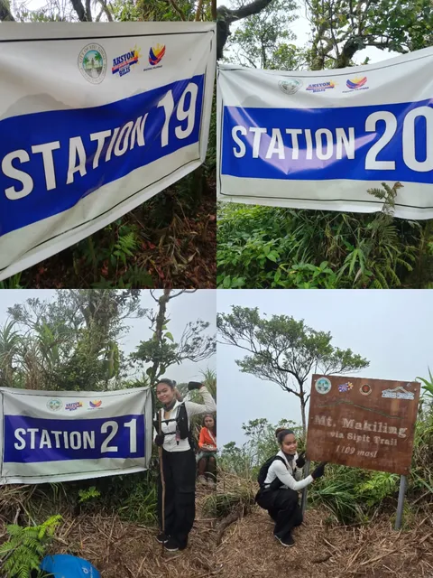
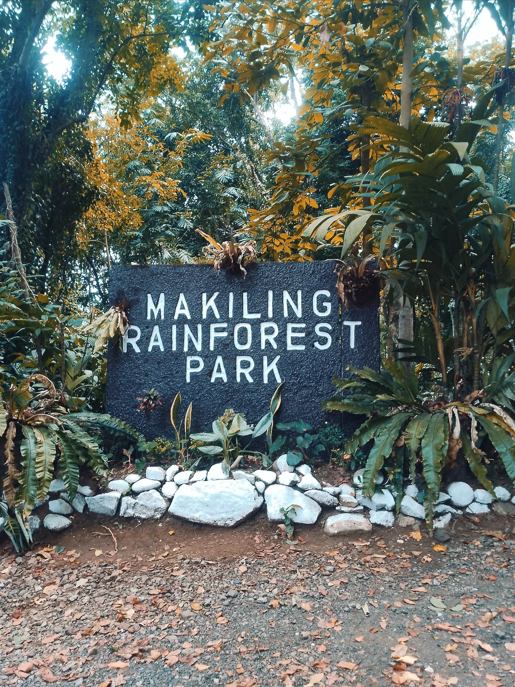
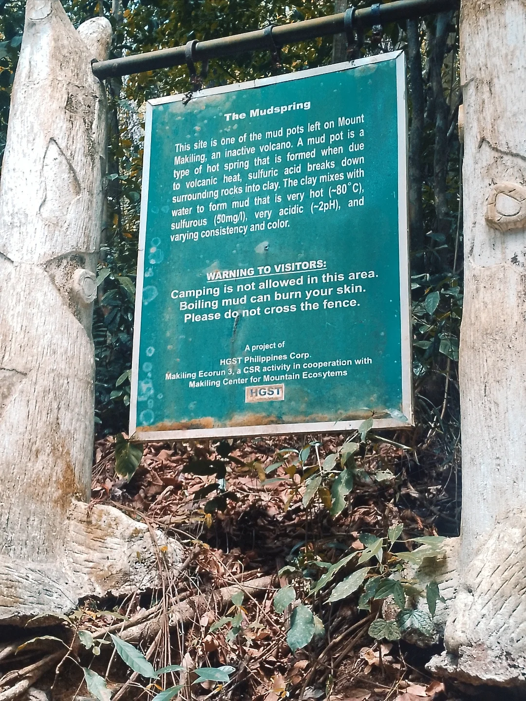

“Another mountain has officially made it to my favorites list!”

May 31, 2026

“Another mountain has officially made it to my favorites list!”

Makiling felt like stepping into a fairytale book. The biodiversity on the mountain was incredible, you could almost feel the life in every tree and every corner of the forest.



We weren’t lucky enough to get a good clearing since we started and finished early, but honestly, it was still more than worth it. The rappelling sections were a fun challenge, and the descent was an absolute blast because we ended up trail running most of it. That was my favorite part of the hike.
Since we took the lead, I’m also grateful that we got the chance to visit the Mudspring. The three of us intentionally made time for that little side quest, haha. And just as I expected, it was absolutely worth it.

“No clearing, no problem. Makiling was still pure magic.”
Interact with our dynamic tools to inspect trail elevations, calculate statistics, and check off required hiking gear.
Slide or hover across the elevation model to analyze slopes and checkpoints.
Check off the essential items we brought for this challenging Mt. Makiling traverse.